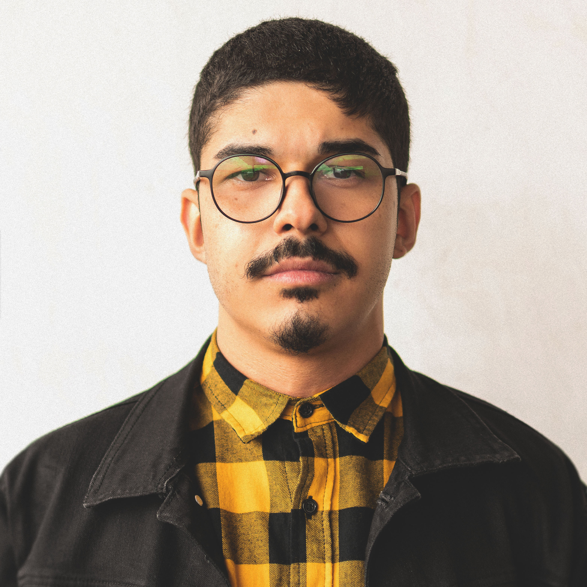

Olá, meu nome é Kaique, prazer!
Tenho 23 anos e sou assistente de e-commerce na Mundial Calçados há 4 anos. Utilizamos uma plataforma, mas mesmo com todo o suporte que uma plataforma pode oferecer, o trabalho de Front-end ainda é extremamente necessário, seja para pequenas alterações de funcionalidades dentro do site ou até alterações maiores. Comecei o curso para entender mais sobre linguagens de programação e todo o trabalho que um DEV pode exercer, pretendo trabalhar exclusivamente com isso em um futuro próximo.
Para essa etapa do curso que tal conversar um pouco e compartilhar algumas ideias?
Você gostaria de sair para tomarmos um café e bater um papo sobre programação e quanto isso pode ser relevante em nossas vidas no futuro?
Endereço de encontro
Por um Punhado de Dólares
Endereço: R. Nestor Pestana, 115 - Consolação, São Paulo - SP, 01303-010
Horário de encontro: A combinar
Conto com sua presença!